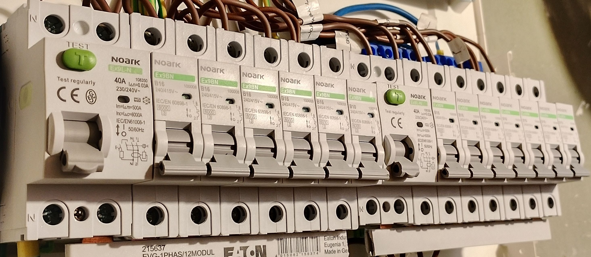

Instalacje elektryczne · Elektryk MG
Stara rozdzielnica elektryczna – kiedy warto ją zmodernizować?
17 listopada 2026 r.
Rozdzielnica elektryczna to miejsce, w którym znajdują się zabezpieczenia obwodów w mieszkaniu lub domu. Starsza rozdzielnica nie musi od razu oznaczać zagrożenia, ale niektórych objawów nie wolno ignorować. Co powinno zwrócić uwagę właściciela mieszkania i kiedy warto wezwać elektryka?

Po czym poznać, że rozdzielnica wymaga sprawdzenia?
Nie każdy problem oznacza konieczność wymiany całej rozdzielnicy. Kontrolę warto jednak zlecić, gdy:
- zabezpieczenia często wyłączają zasilanie, a przyczyna nie jest znana;
- widać ślady przegrzania, przebarwienia lub uszkodzenia obudowy;
- z rozdzielnicy dochodzi nietypowy zapach, trzaski albo zauważalne jest nadmierne nagrzewanie;
- obwody są nieopisane, a przy kolejnych przeróbkach trudno ustalić, co jest do czego podłączone;
- planowana jest rozbudowa instalacji, np. dodatkowe obwody kuchenne, płyta indukcyjna czy większa liczba odbiorników.
Jeżeli pojawia się dym, zapach spalenizny lub inne oznaki poważnej awarii, nie należy otwierać rozdzielnicy ani próbować naprawiać jej samodzielnie. Należy przerwać użytkowanie zagrożonej instalacji i wezwać fachowca.
Co znajduje się we współczesnej rozdzielnicy?
Wyposażenie zależy od instalacji, warunków zasilania i potrzeb budynku. W rozdzielnicach można spotkać między innymi:
- Wyłączniki nadprądowe – zabezpieczają obwody przed skutkami przeciążenia i zwarcia.
- Wyłączniki różnicowoprądowe (RCD) – wykrywają prądy różnicowe i w odpowiednich warunkach zapewniają dodatkową ochronę przed porażeniem.
- Ograniczniki przepięć (SPD) – w odpowiednio zaprojektowanym układzie ograniczają skutki przepięć.
- Aparaty do rozłączania i podziału obwodów – ułatwiają bezpieczną obsługę i organizację instalacji.
Nie ma jednej uniwersalnej listy aparatów pasującej do każdego mieszkania. Dobór zabezpieczeń musi uwzględniać całą instalację, a nie tylko liczbę wolnych miejsc w obudowie.
Czy wystarczy wymienić stare bezpieczniki na nowe?
Niekoniecznie. Wymiana samych aparatów nie usuwa uszkodzeń przewodów, nie poprawia automatycznie połączeń ochronnych i nie zwiększa dopuszczalnego obciążenia instalacji. Szczególnej uwagi wymagają starsze instalacje aluminiowe oraz układy, w których nie ma wydzielonego przewodu ochronnego.
Przed modernizacją trzeba ocenić m.in. rodzaj sieci, stan i przekroje przewodów, sposób ochrony przeciwporażeniowej, istniejące obwody i możliwość zastosowania odpowiednich zabezpieczeń. Czasem wystarczy naprawa lub uporządkowanie rozdzielnicy, a czasem konieczne są szersze prace.
Kiedy najlepiej zaplanować modernizację?
Dobrym momentem jest generalny remont mieszkania, wymiana starej instalacji, rozbudowa kuchni albo zmiana sposobu zasilania. Warto wtedy zaplanować obwody pod obecne i przyszłe potrzeby, zapewnić miejsce w rozdzielnicy oraz czytelnie oznaczyć zabezpieczenia.
Po wykonaniu prac konieczna jest odpowiednia weryfikacja instalacji, w tym wymagane oględziny i pomiary. Bez nich sam estetyczny wygląd rozdzielnicy nie jest dowodem bezpieczeństwa.
Modernizacja rozdzielnicy w Lublinie i okolicach
Elektryk MG zajmuje się montażem i modernizacją rozdzielnic oraz pracami przy instalacjach elektrycznych w mieszkaniach, domach i lokalach. Zakres prac ustalamy po rozpoznaniu stanu instalacji — bez zakładania z góry, że zawsze trzeba wymienić wszystko.
Jeśli planujesz remont albo masz wątpliwości co do stanu rozdzielnicy, skontaktuj się z nami: 781 526 129 lub przejdź na stronę kontaktową.